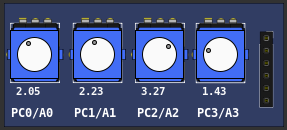
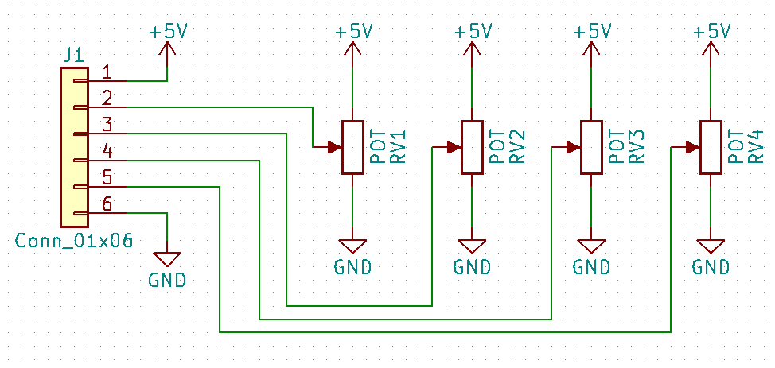
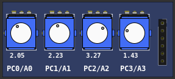
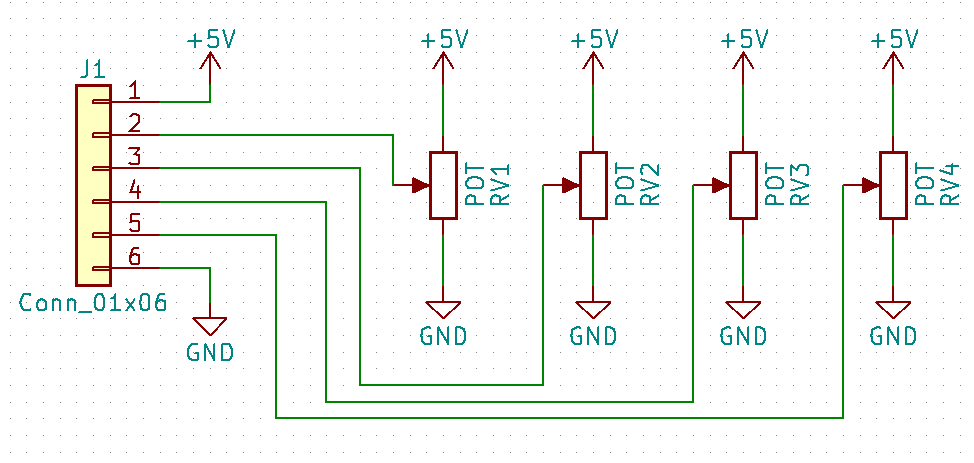

10.2.18 Potentiometers (Rotary)
This part is formed by 4 rotary potentiometers connected between 0 and 5 volts, the output is connected to the cursor and varies within this voltage range.


This part is formed by 4 rotary potentiometers connected between 0 and 5 volts, the output is connected to the cursor and varies within this voltage range.

